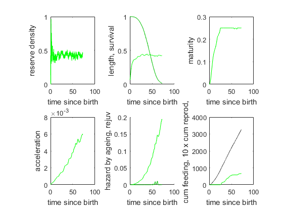
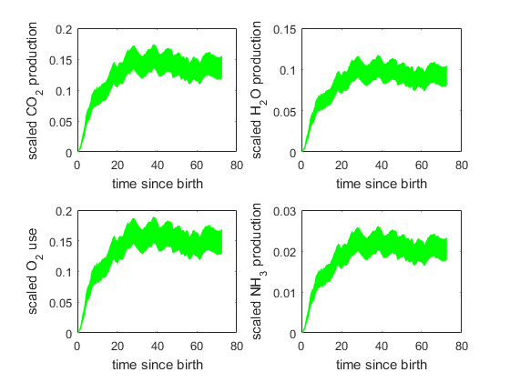

shtraject
created by Bas kooijman at 2010/04/01, modified 2011/03/07
Simulation of standard DEB model with stochastic searching using scaling to dimensionless quantities handling and searching intervals only evaluate length at start interval for theory, see comments to DEB3 for 2.9
All variables and parameters are scaled down to dimensionless quantities. Due to the stochastic nature of the searching process, death by shrinking and rejuvenation can occur, even at constant food density. The stochastic nature becomes more important for low food density, large food particle size, small maximum body size (zoom factor). The computation time depends on the parameter values and can be substantial for small food particle sizes. The routine taject_M first runs traject and then computs and presents also the four mineral fluxes in 4 sub-plots in a second window. The theory is explained the comments for section 2.9 and 4.3.1.
The script results in 2 figures with quantities as function of scaled time since birth Figure 1 with six sub-plots:
- the reserve density,
- the survival probability and length,
- the maturity, the acceleration of aging,
- the hazards due to ageing and rejuvenation,
- the cumulative number of eaten food particles and of eggs.
The trajectories are shown in red after death by shrinking. The (default) time period for the simulaton is from birth till two times the expected life span.
Figure 2 with four sub-plots : CO2, H2O, O2 and NH3 fluxes
You can study the effect of parameter values by changing them. Outcomment last line of this script if you don't want to have the mineral fluxes.
 